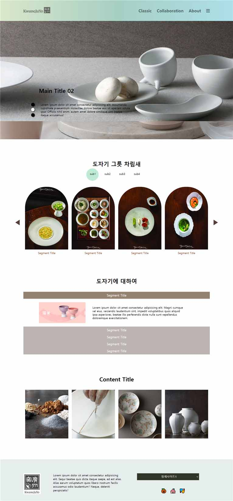

이 레이아웃을 보면 반응형을 고려한
HTML 구조가 머릿속에 그려지나요?
이 레이아웃을 보면 반응형을 고려한
HTML 구조가 머릿속에 그려지나요?

이 UI를 보면 어떤 CSS가 문제인지 예상되나요?
이런걸 만들때 어떻게 애니메이션이 움직이여할지
머릿속에서 설계가 되나요?
이 버튼을 클릭했을때, 어떻게 버튼을 탐색해야할지 바로 감이 잡히나요?
위와 아래의 선택자중 어떤게 더 파워가 센지 바로 보이나요?
git repository를 어떻게 pc에 복제하는지 cmd로 방법을 알고있나요?
git에 올린 사이트를 홈페이지처럼 공유할 수 있나요?
시멘틱 태그, ARIA 속성, 크로스 브라우징 대응
이벤트/프로모션 페이지, 반응형 퍼블리싱 경험
Figma, Git 기반 협업으로 실무와 동일한 환경
| 항목 | 일반 강의 | 웹 퍼블리싱 강의 |
|---|---|---|
| 커리큘럼 | HTML, CSS 기본 위주 | HTML, CSS, SCSS, JS, jQuery, Git, Figma |
| 실습 | 간단한 개인 과제 중심 | 실무 이벤트/프로모션 페이지 프로젝트 |
| 협업 경험 | 개인 학습 중심 | Git, Figma 기반 팀 프로젝트 협업 |
| 포트폴리오 | 완성도 낮은 샘플 수준 | 취업용 포트폴리오 100% 완성 |
| 취업 지원 | 별도 지원 없음 | 이력서·포트폴리오 리뷰 및 멘토링 |
회사명: 잡코리아 (예시) · 서울
포지션: UI개발파트 · 정규직
담당 업무: 이벤트 페이지 구축, 반응형 웹 퍼블리싱, UI/UX 개선
✅ 위 모든 기술은 본 강의 커리큘럼에서 실습합니다.
“처음 코딩을 접했는데도 이벤트 페이지를 직접 만들 수 있었어요.”